Every UI element mapped to best practices from leading AI platforms — Claude, ChatGPT, Microsoft Copilot, Gemini, Amazon Rufus.
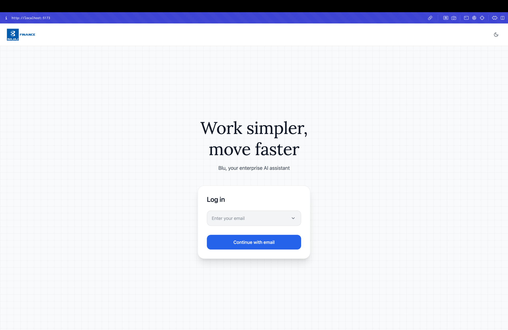
Both Claude and ChatGPT use a single centered card with one input field and one CTA. The background is neutral and distraction-free.
This is L0 of the progressive disclosure model — no information is revealed until the user has committed to step one. Placing the form in a white floating card creates clear depth hierarchy against the muted grid background, guiding the eye directly to the action.
The large serif headline "Work simpler, move faster" sets emotional framing before the utility starts — a pattern used by ChatGPT's "A new way to work" messaging.
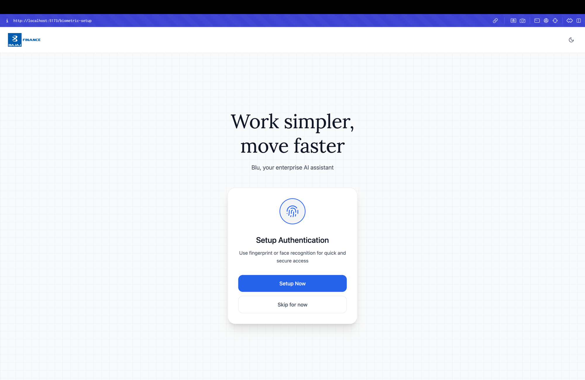
Security setup is high-stakes. Forcing biometrics would create friction and distrust. Offering "Skip for now" as an equal-access but visually de-prioritised option follows the consent model used by ChatGPT's feature onboarding flows.
The fingerprint icon in a soft circle visually communicates what is being set up before the user reads a word — this reduces cognitive resistance to the permission request.
The same layout card language as the login screen creates continuity across the onboarding journey, reinforcing the visual system identity.
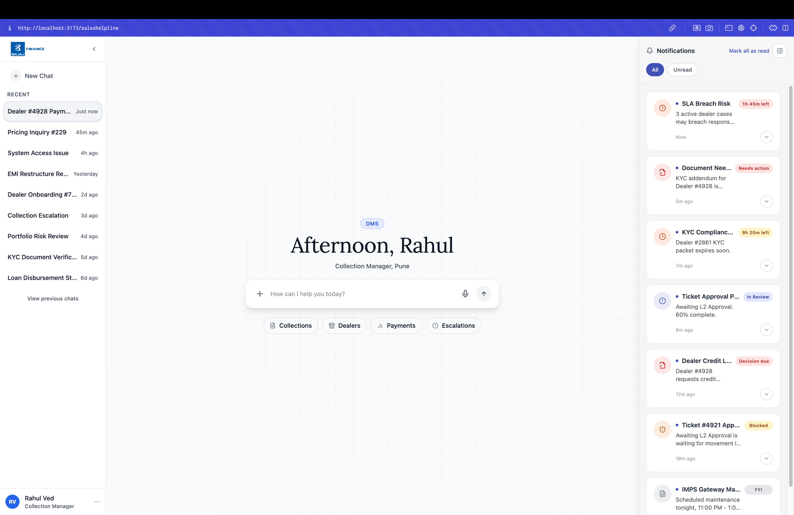
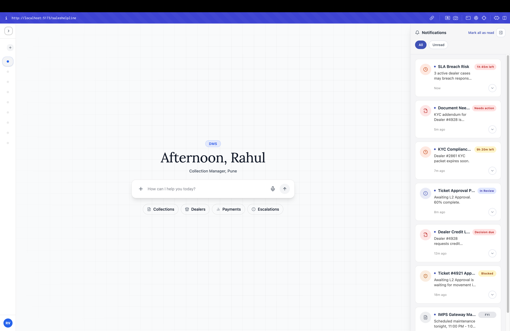
Claude and ChatGPT both keep the last 10+ sessions visible in a persistent left panel with relative timestamps (now, 45m ago, Yesterday) — the same pattern Blu uses.
Relative time is faster to scan than absolute timestamps. "Just now" communicates recency without requiring the user to do math.
Three sidebar states — full, icon rail, hidden — follow the Principle 14: Inline vs Expanded logic applied to the shell itself. Users get maximum content focus when needed, without permanently losing navigation.
Microsoft 365 Copilot surfaces critical items in a persistent right panel — approvals, flagged documents, blocked tasks — so the user doesn't miss them while in a conversation.
Urgency badges (SLA Breach → Blocked → Decision Due → Needs Action → In Review → FYI) create a visual severity hierarchy. Red for time-critical, orange for decision-needed, blue for informational — matching global notification semantics.
Countdown timers ("1h 45m left") add temporal urgency without requiring the user to calculate deadlines. This is critical for enterprise users managing SLA-bound workflows.
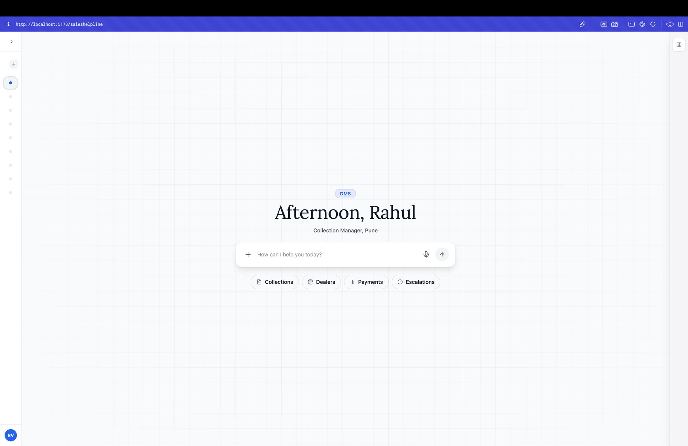
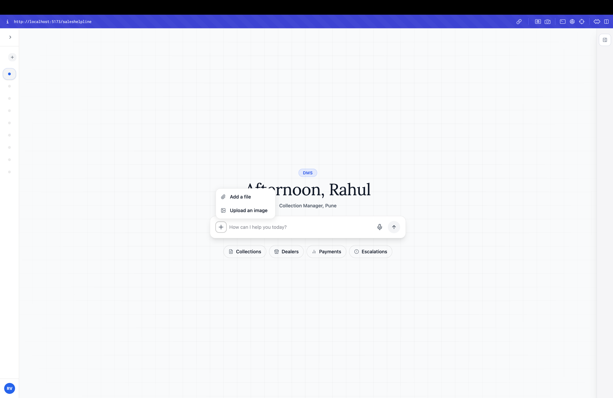
ChatGPT's + button expands to a contextual popover with file and image options — the same pattern Blu uses. This keeps the composer bar clean at rest while making attachments accessible in one tap.
The microphone icon is always visible alongside the send button, following Gemini's approach of treating voice as a primary input — not buried in a menu or settings.
The send button activates (fills with colour) only when text is present — providing feedback that the system is ready, a key affordance principle.
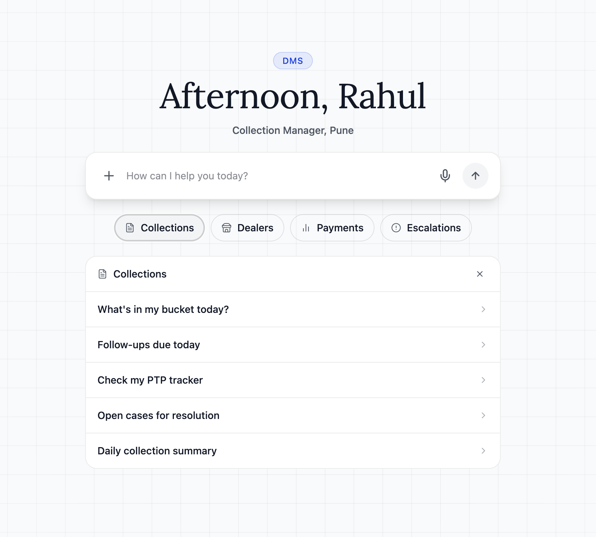
ChatGPT's personalised greeting ("Good morning, [name]") reduces cold-start anxiety and makes the interface feel aware. Time-of-day salutation ("Afternoon, Rahul") adds temporal context without requiring the user to provide it.
The "DMS" context badge above the greeting, borrowed from Amazon Rufus's domain-awareness pattern, tells the user exactly which system context the AI is operating in — critical in enterprise where the same user may switch between HR, Finance, and Sales modules.
Role + location ("Collection Manager, Pune") confirms the right identity is active — especially important with biometric login where multiple users may share a device.
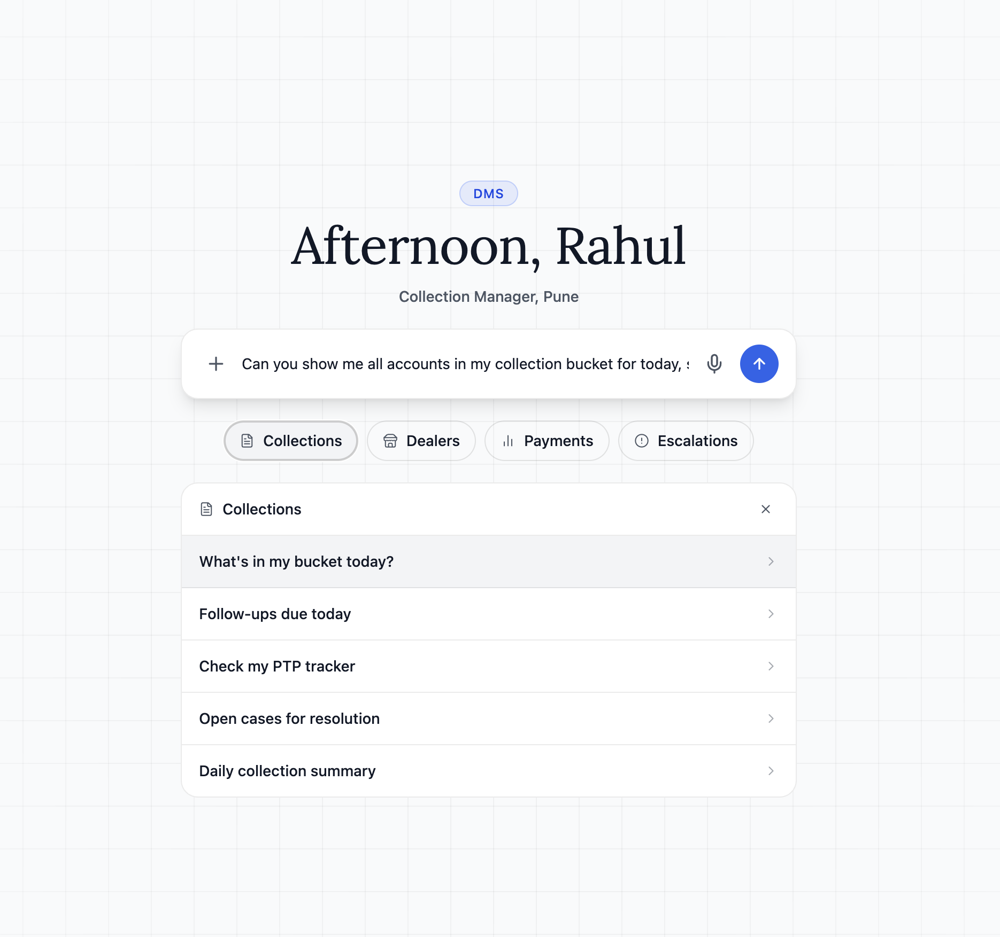
At L0 (no input yet), showing four topic chips gives the user intent categories without overwhelming them with options. This mirrors ChatGPT's suggested prompts and Rufus's category navigation.
Tapping a chip triggers L1 — the sub-prompt drawer opens with 5 contextual options specific to that domain. This follows Principle 3's rule: max 3–5 prompts per turn, contextual to current state.
The drawer pattern (not a new page) keeps the user in context and allows one-tap query submission — reducing the input barrier for enterprise users who may not know what to ask.
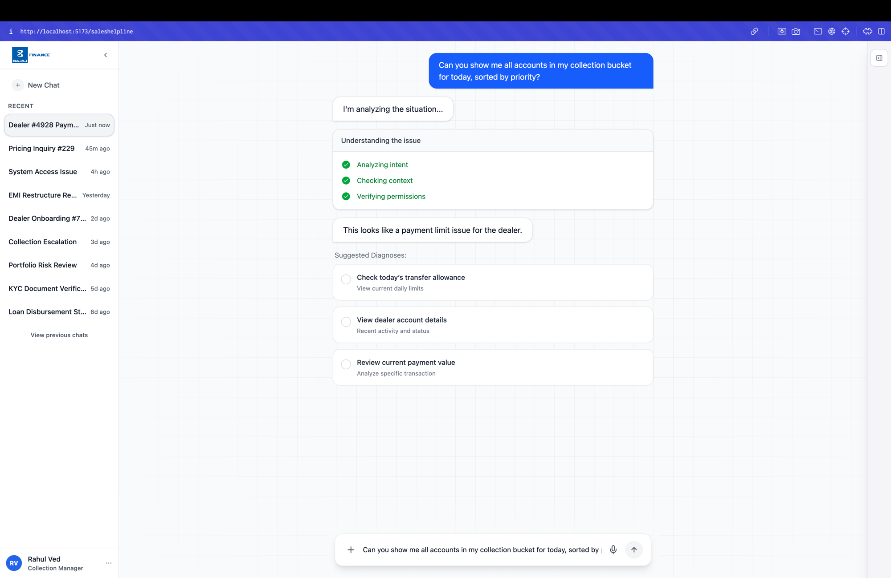
Claude's Extended Thinking and Copilot's agentic step tracker both show users what the AI is doing before delivering the answer. This builds trust, especially for enterprise users who are accountable for AI-assisted decisions.
Blu's checklist — Analyzing intent → Checking context → Verifying permissions — is directly derived from Copilot's step tracker pattern. Green checkmarks provide progressive confirmation that each step completed without error.
The "I'm analyzing the situation…" floating bubble mirrors Claude's thinking indicator — a gentle signal that the AI is working, preventing the user from re-submitting the query.
Plain-text AI responses force users to read everything. Structured cards let users scan in under 2 seconds and select the most relevant next action — critical for enterprise users who are time-constrained.
Each diagnosis card follows Principle 11's format rule: actions → CTA buttons. The radio input signals selectability. The title-subtitle hierarchy within the card (action name + what it does) mirrors ChatGPT's tool result cards.
The label "Suggested Diagnoses" sets expectation that these are the AI's interpretations, not commands — preserving the user's decision-making authority (Principle 8).
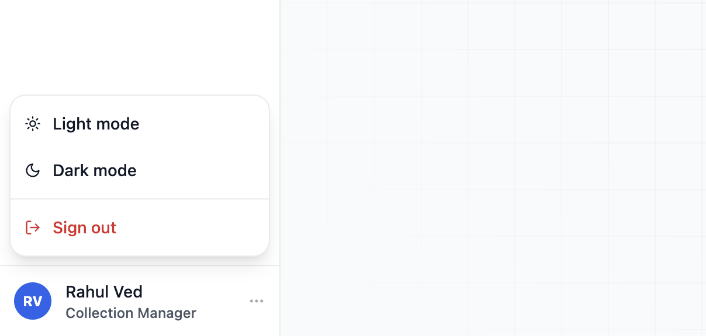
The floating account card follows Claude's exact pattern — anchored to the user avatar at bottom-left, surfacing only on demand, keeping the main interface clean.
Light / Dark mode as explicit choices (not just system-follow) is a Claude best practice. Enterprise users may use the app in contexts where their OS theme differs from their preference for the tool.
Sign out in red follows the global UX convention for destructive actions. The visual separation (a horizontal divider before "Sign out") adds an extra layer of protection against accidental taps — the same pattern used by Claude and ChatGPT.
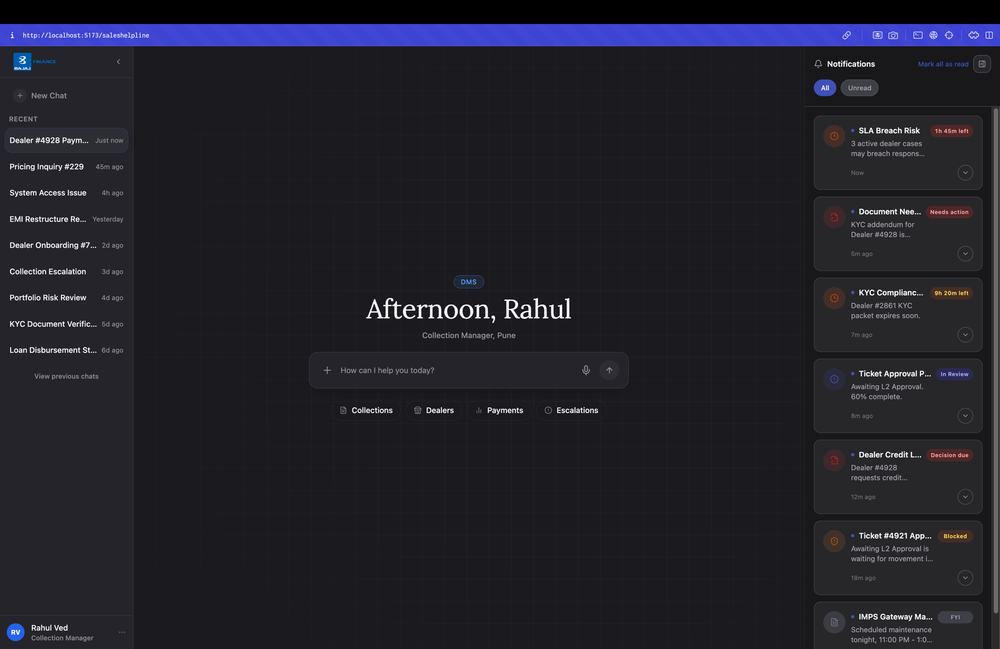
Dark mode is not just an aesthetic choice — it reduces eye strain for enterprise users working extended shifts or in low-light environments (field collection agents, night-shift operations).
Blu's implementation uses CSS design tokens (–-surface-1, –-text-primary, –-border) in theme.css. The .dark class on the root element flips all tokens simultaneously — the same architectural approach Claude uses. This means no component ever needs individual dark mode overrides.
Critically, urgency badge colours remain semantically correct in dark mode — red is still danger, orange is still warning — preserving the notification panel's information hierarchy across themes.
Claude uses a subtle dot grid on its background. Linear, Notion, and many enterprise SaaS tools use a line grid. Both serve the same purpose: adding a low-contrast texture that gives depth without visual noise.
Blu's fine grid background creates a spatial canvas that makes floating cards (login form, chat composer, notification panel) appear elevated — reinforcing the layered surface hierarchy.
At the correct contrast ratio, the grid is below the threshold of conscious attention — it's perceived as quality and depth, not as a distraction. This is a well-established technique in premium SaaS interfaces.
Each design decision in Blu traces directly to a pattern established by Claude, ChatGPT, Microsoft Copilot, Gemini, or Amazon Rufus — and is grounded in the 14 principles defined in the platform benchmarks document.